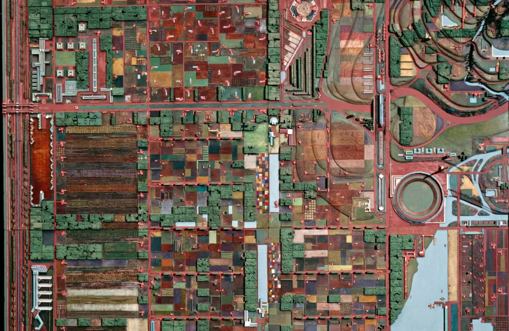
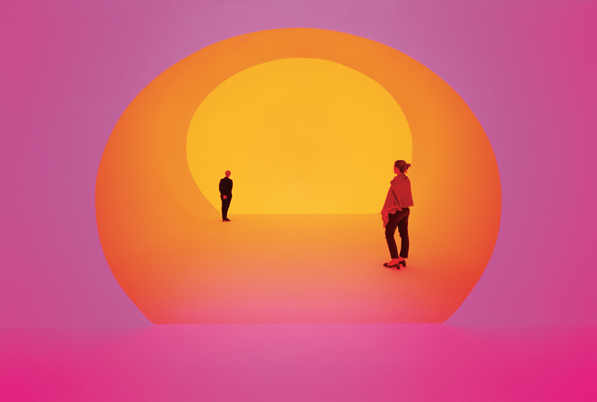
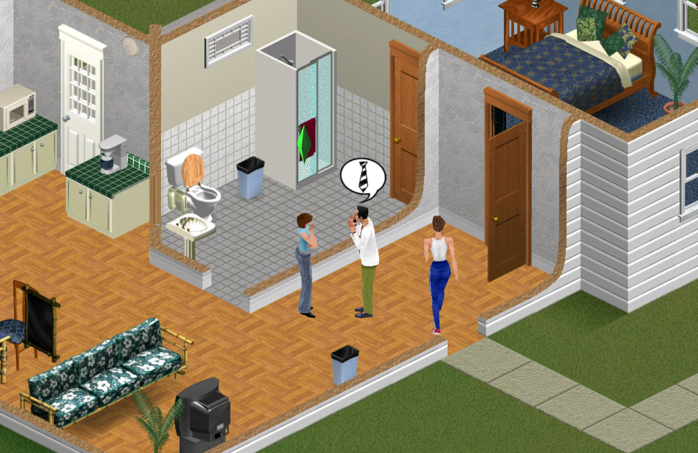

utopia, distopia, aetopia
the construction of the ideal society, the human stories that follow them, and whether or not they even exist at all.
towards participatory computer-assisted world building & interactive experiences
hello.world_ is a project that aims to create a sandbox game for interactive world building and dynamic storytelling. Leveraging advancements in human-computer interaction and generative AI/ML, the project will build upon previous works developing fully procedureal, emergent, and poigniant virtual worlds.
Inspired by classic world building techniques from speculative fiction, the visual language of social utopianism, and theory from the field of choice design - the project will live in an ecosystem of games and tools, allowing indie devs to build out interactive narratives.
How might we develop a platform that allows players to generate entire worlds and environments from the ground up using AI/ML - leading to emergent and immersive systems, stories, and scenarios?
dynamic terrain and building generation
Procedural algorithms (Perlin noise, Wave Function Collapse) and AI tools like Google Genie enable scalable, diverse landscapes and structures.
organic npc interaction and organization
Agent-based AI and LLM-driven dialogue create emergent social systems, inspired by The Sims and Dwarf Fortress.
personal avatar creation
Customizable avatars powered by expansive online tools, inspired by Picrew, Spore, and The Sims.
choice, story, and narrative emergence
AI-driven branching systems (Ink, Twine, AI Dungeon) enable dynamic quests and storytelling like No Man Sky.
procedural verbs and compound mechanics
Combinatorial action systems, grammar-based simulations, and language parsing expand player agency.
relationship simulation
Inspired by dating simulations, models would track memory, trust, and emotion for lifelike social dynamics.
user generated content
Player-driven creation, 3D assets facilitated through databases, local storage, or P2P data.
sharing and collaboration
Multiplayer collaboration via cloud tech (WebRTC, CRDTs), like MMO RPGs or Minecraft Servers.

the construction of the ideal society, the human stories that follow them, and whether or not they even exist at all.

the aesthetics behind constructed worlds, how they have developed, and how they continue to effect our post-truth era.

a mediated review of games, hci studies, and generative practices that contextualize and influence the field of choice design.
specialized in procedural tools and interactive systems.
experienced in speculative design and spatial modeling.